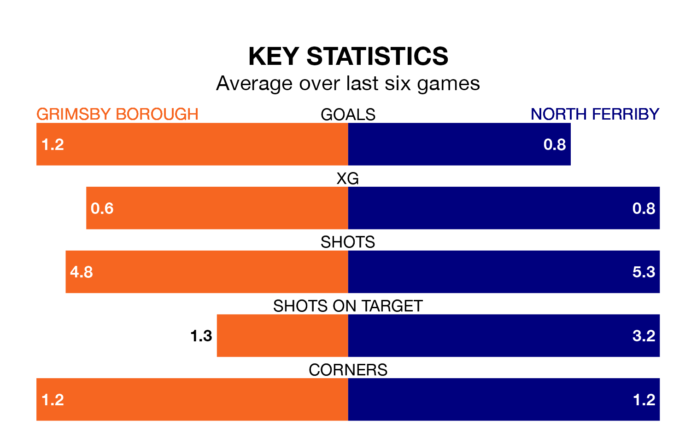

North Ferriby make the journey to play Grimsby Borough on Saturday looking to pick up points to end their three-game losing streak.
North Ferriby's struggles have left them with just three points from their last six Northern Premier League Division One – East matches, while their opponents have earned 14 from a possible 18.
With 26 goals in 22 games so far this season, Grimsby are scoring at below the league average rate with 1.2 goals per game. But they are conceding fewer than average too, letting in 31 goals at a rate of 1.4 per game.
North Ferriby, meanwhile, are above average scorers, with 1.7 goals per game, compared to a league average of 1.6. They have conceded 2.0 goals per game.
Borough are 14th in the table after 22 games, of which they have won eight and drawn three, earning 27 points.
The visitors are four places ahead of the home team in 10th, with nine wins and two draws putting them on 29 points.
Grimsby's last match was on January 13, a 0-0 draw against Brighouse Town.
North Ferriby lost 2-1 against Belper Town last time out, also on January 13.
Updated: 10:02 (UTC), 19/01/24